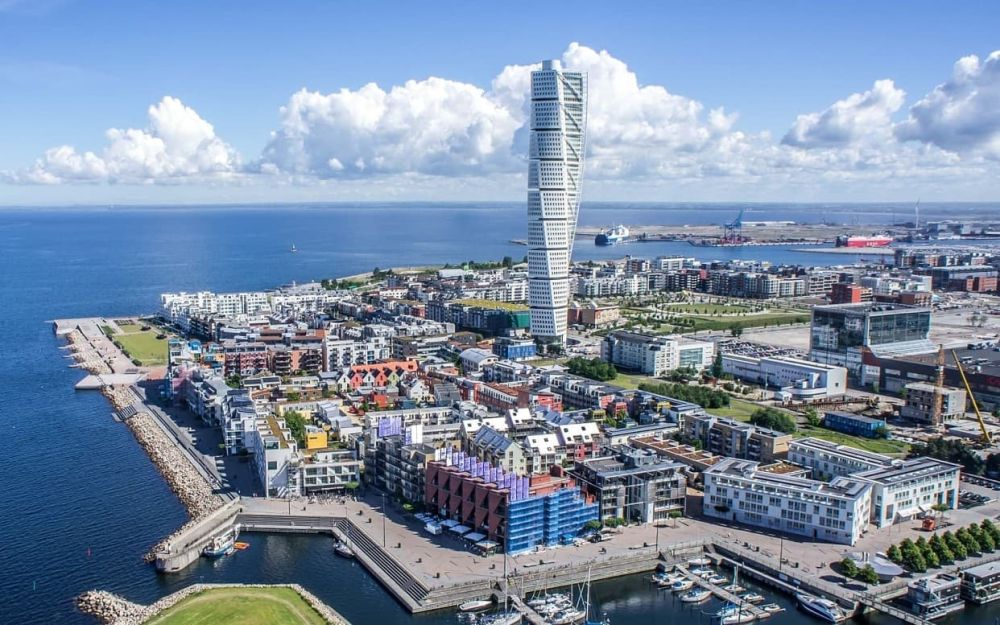

Explorați Malmö - Orașul eclectic al Suediei
Malmö, situat în sudul Suediei, este un oraș plin de diversitate culturală, arhitectură modernă și istorie bogată, oferind o varietate de atracții și experiențe interesante pentru vizitatori:
-

Centrul vechi - Atmosferă istorică
Explorați străzile înguste și clădirile vechi din centrul istoric al orașului.
-

Arhitectură modernă - Design contemporan
Malmö este cunoscut pentru clădirile sale inovatoare, inclusiv Turning Torso, o clădire în spirală.
-

Plaje frumoase - Relaxare la Marea Baltică
Malmö oferă plaje primitoare și promenade pe malul mării pentru momente de relaxare.
-

Scena culinară - Delicii gastronomice
Experimentați bucătăria diversificată a orașului, de la restaurantele fine dining la food truck-uri.
-

Evenimente culturale - Artă și divertisment
Malmö găzduiește festivaluri, concerte și expoziții, reflectând diversitatea culturală.
Concluzii
Malmö este un oraș plin de contrast, oferind o combinație de vechi și nou, cultură și inovație.